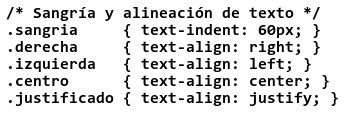

11. Alineación del texto¶
En este ejercicio se estudian las diferentes alineaciones que se pueden dar al texto así como la sangría de primera línea.
Ejercicio¶
Fichero css-text-align.html
1 2 3 4 5 6 7 8 9 10 11 12 13 14 15 16 17 18 19 20 21 22 23 24 25 26 27 28 29 30 31 32 | <!doctype html>
<html>
<head>
<title> Alineación de texto </title>
<link rel="stylesheet" type="text/css"
href="css-text-align.css" >
</head>
<body>
<h1> Alineación de texto </h1>
<p class="sangria">
La sangría en la primera línea permite ver con mayor facilidad el
comienzo de cada párrafo. Reduce el ancho de la ventana para comprobar
el comportamiento de la sangría y la justificación del texto.
</p>
<p class="derecha"> Texto con alineación derecha. </p>
<p class="izquierda"> Texto con alineación izquierda. </p>
<p class="centro"> Texto con alineación central. </p>
<p class="justificado">
Texto con alineación justificada.
Todas las líneas llegan justo al final de la pantalla.
Reduce el ancho de la ventana para comprobar
el comportamiento de la sangría y la justificación del texto.
</p>
</body>
</html>
|
Fichero css-text-align.css
